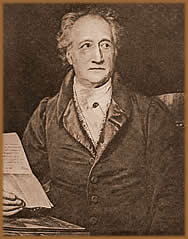
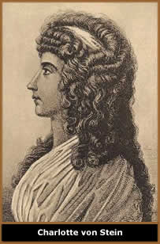
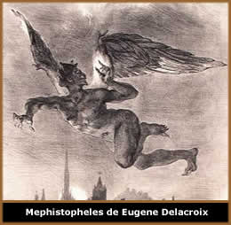

Johann Wolfgang von Goethe nasceu
em Frankfurt, Alemanha, no dia 28 de agosto de 1749. Era o filho
mais velho de Johan Kaspar Goethe, um homem austero e culto, entusiasmado
pela ciência e amante das artes, além de advogado
rico e conselheiro da corte de Frederico II; e de Katharine Elizabeth
Textor, vinte anos mais jovem que o marido, era uma pessoa alegre
e disposta que cultivava um talento especial para contar estórias.
Quando
Johann tinha apenas dez anos de idade, sua cidade natal foi ocupada
pelos franceses, no período da Guerra dos Sete Anos, que
envolvia França, Áustria e Rússia de um lado;
e em oposição, Inglaterra e Prússia. Nesta
época, para desagrado do Sr. Kaspar Goethe, que não
simpatizava com as causas francesas, o comandante do exército
francês hospedou-se na casa da família. Por outro
lado, o infante Johann teve a oportunidade de familiarizar-se
com o idioma e empolgou-se com as referências de escritores
franceses.
Inicialmente, sua instrução foi dada
por seu pai e, posteriormente, prosseguida por mestres contratados
como tutores. Com 16 anos de idade, em outubro de 1765, deu início
aos estudos de Direito na universidade de Leipzig, que considerava
uma "pequena Paris". Além deste curso, estudou
também desenho e desenvolveu interesse pela pintura.
Neste período em Leipzig, Johann descobriu
a boêmia e a vida noturna, e passou a escrever suas primeiras
poesias inspiradas em fatos da própria vida. Apaixonou-se
por Anna Katharina Schonkopf, filha de um comerciante de vinhos
local. Inspirado nesse amor escreveu Das Leipziger Liederbuch.
Em 1768, com a saúde debilitada devido aos
excessos da vida noturna, foi obrigado a retornar para Frankfurt
a fim de tratar-se. Neste período, ocupava seu tempo com
leitura, experiências alquímicas e astrológicas.
Recuperado, foi enviado pelos pais à cidade francesa de
Alsácia, a fim de retomar seus estudos.
Em 1770, já formado em direito, participa
do movimento "Sturm und Drang" (Tempestade e Ímpeto)
liderado pelo amigo pessoal Johan Gottfried Herder. A peça
Geschichte Gottfriedens von Berlichingen mit der eisernen
Hand dramatisiert (História de Gottfriedens von
Berlichingen dramatizada com mão de ferro) escrita
entre 1771 e 1773, e o poema Prometheus, são referências
literárias do movimento. Nesta época apaixona-se
e mantém um romance com Frederica Brion, filha do pastor
de Sessenheim. Após o término da relação,
retorna a sua cidade natal onde exerceu sua profissão de
advogado, escreveu poesias e peças teatrais, além
de colaborar com o jornal "Frankfurter Gelehrte Anzeigen".
Devido à profissão, passou quatro meses em Wetzlar
e apaixonou-se por Charlotte Buff, noiva de um colega; este sentimento
foi tão intenso que quase o levou a cometer suicídio.
Em 1774, mudou-se para Wetzlar onde continuou escrevendo
poesias. Neste mesmo ano, publicou sua primeira história
auto-reveladora, uma obra que se tornaria conhecidíssima
e o poria entre os grandes escritores da literatura européia,
o romance Die Leiden des Jungen Werthers (Os sofrimentos do
jovem Werther). Werther, personagem principal, suicida-se
e torna-se o protótipo do herói romântico.
A influência deste romance foi tanta que foi considerado
o responsável pelo suicídio de diversos jovens que
a leram. Esta obra é inspirada pela paixão intensa
de Goethe por Charlotte Buff. Em seguida, o autor inicia um flerte
com Maximiliane von La Roche, filha da escritora Sophie von La
Roche. No final deste ano, o duque de Saxe-Weimar-Eiisenach, Carlos
Augusto, numa viagem à Paris, convidou Johann Goethe a
visitar Weimar, capital do ducado.
O ano de 1775 foi repleto de acontecimentos importantes
em sua vida. Enamorou-se de Lili Schonemann, viúva de um
rico banqueiro de Frankfurt e figura da elite social da cidade.
O pouco interesse que tinha de atuar no meio aristocrático
o levou a romper a relação.
Mas este romance o inspirou a escrever duas operetas,
Erwin und Elmire e Claudine von Villa Bella.
Posteriormente, viajou à Suíça ao lado do
Conde von Haugwitz e de Friedrich Leopold. Neste mesmo ano, escreveu
a peça Stella, abordando a vida de um homem que
encontra uma forma de conciliar a convivência com a esposa
e a amante. Obviamente, a peça provocou diversos protestos
e o autor viu-se obrigado a alterar o final, de modo que dois
personagens cometessem suicídio.
Após herdar o governo do Ducado, o então
príncipe, Carlos Augusto, refez o convite ao escritor,
que aceitou imediatamente e mudou-se para Weimar disposto a desfrutar
dos benefícios da corte. Pouco tempo depois, a população
acusava Goethe de desvirtuar o príncipe. A reação
de Carlos Augusto foi ocupá-lo de atividades administrativas.
Este fato obrigou o escritor a abandonar parcialmente suas obras
Egmont, Fausto, Torquato Tasso
e Iphigenie auf Tauris.
Goethe
envolveu-se num novo romance. Desta vez, com Charlotte von Stein,
mulher refinada e esposa de outro funcionário. Mãe
de sete filhos e sete anos mais velha, o autor referiu-se a ela
como "O belo talismã de minha vida".
Esta relação estendeu-se por 12 anos e o autor escreveu
mais de 1.500 cartas. Foi este romance que inspirou a obra Die
Geschwister.
Sua irmã Cornélia falece em 1777.
No início da década de 1780, supostamente, filia-se
à seita "Maçonaria Iluminada" que seria
a continuidade do Illuminati.
Em meados desta década, viajou repentinamente para a Itália.
Usando um nome falso, transitou por algumas cidades da região
até chegar à Roma, onde foi acolhido numa colônia
de artistas alemães.
Em 1784, descobre o intermaxillare, osso
do corpo humano desconhecido pelos anatomistas, e elabora teses
que antecipam a "Teoria Darwinista". Seu pai falece
em 1786. Ainda nesta cidade, voltou suas atividades à literatura
e retomou a peça Iphigenie Auf Tauris (Ifigênia
na Táurida), concluída em 1787. Esta estadia
em Roma ainda lhe rendeu um diário intitulado Italianische
Reise (Viagem Italiana).
Mas o principal fruto foi Romische Elegien
(Elegias Romanas), escritos de 1788 a 1789. Esta obra constitui-se
de poemas nos quais admira a Antigüidade clássica.
Nesta mesma época, ao lado de Christiane Vulpis, filha
de um humilde funcionário do ducado, constituiu um lar.
Desta relação, nasceu August. Em 1790, conclui Torquato
Tasso, peça teatral que aborda dificuldades da linguagem
e o problema do conflito entre o compromisso social a preservação
da individualidade. Neste mesmo ano, foi publicada a primeira
parte da célebre obra, Fausto. Ainda neste ano,
publica Die Metamorphose der Pftanzen Zu Erklaren, uma
obra que aborda a "metamorfose das plantas" e foi muito
criticada pelos biólogos.
Em 1792, na companhia do Duque, transita por território
francês pouco antes do início da batalha de Valmy,
que o escritor registraria nas obras Campagne in Frankreich
- 1792 e Belagerung von Mainz.
A partir de 1794, em Weimar, torna-se amigo do
escritor alemão Friedrich von Schiller. Diversas cartas
foram trocadas entre ambos. Nos anos seguintes, contribuiu para
o jornal de Schiller "Die Horen", publicou Wilhelm
Meisters Lehrjahre (Os anos de aprendiz de Wilhelm Meister)
entre 1795 e 1796 , que aborda o mesmo tema de Torquato de
Tasso.
Nos primeiros anos de 1800, atuou como advogado
em causa do amigo pessoal Schelling, e obteve grande prestígio
profissional e pessoal. A morte do amigo em 1805 o abalou profundamente;
em sua homenagem escreveu Epilog zu Schillers Glocke.
Em 1806, Goethe adoece gravemente. Neste mesmo
ano, devido à invasão francesa em Weimar, temendo
pelos seus bens, consolidou o casamento com Christiane Vulpis,
que tinha zelado por sua saúde, e até este momento,
a apresentava apenas como governanta. Mas, devido ao romance pouco
aceito pela sociedade, o casal não era bem recebido nos
lares.
Ao invadir a Alemanha em 1808, Napoleão
quis conhecer pessoalmente o escritor que foi condecorado com
a "Grande Cruz da Legião de Honra". Em seguida,
publicou a primeira parte de Fausto e começou
a escrever Der Wahlverwandtschaften (Afinidades eletivas),
que terminaria ao final do ano seguinte. Este livro é inspirado
pelo seu amor por Minna Herzlieb, uma jovem de dezoito anos, filha
adotiva de amigos. A obra foi considerada imoral e gerou protestos.
Em 1810, o escritor fez mais uma incursão
pela ciência na obra Zur Farbenlehre (Teoria das cores)
ignorando as recentes descobertas de Newton e propondo uma nova
teoria. Obviamente o trabalho não foi levado a sério
no meio científico. No ano seguinte, escreveu uma autobiografia
intitulada Dichtung und Wahrheit (Poesia e Verdade).
Até meados da década de 1810, Goethe,
já sem compromissos com sua atividade no governo, dedica-se
a coordenar o teatro da corte. Sua esposa, Christiane Vulpis,
falece em 1816. No ano seguinte, seu filho casa-se e Goethe abandona
a direção do teatro. A obra Italianische Reise
(Viagem Italiana), escrita vinte anos antes, é publicada.
No ano de 1819, durante um novo romance com Mariana
Von Willemer, de apenas dezoito anos, escreve West-östlicher
Divan (Divã do Leste e Oeste), que foi inspirada na
versão dos poemas persas de Hafiz, traduzidos por Joseph,
Barão von Hammer-Purgstall. No mesmo ano publicou também
Trilogie der Lindenschuaf.
A
partir de 1823, Jean-Pierre Eckermann, passa a auxiliá-lo
na escrita e revisão de seus trabalhos. Uma última
paixão pela jovem Ulrique von Levetzow marca seus últimos
anos de vida e lhe inspira l'Élégie de Marienbad.
Paralelamente, trabalha na obra Wilhelm Meisters Wanderjahre
oder Die Entsagenden (Os anos de viagem de Wilhelm Meister ou
os Renunciantes) escrita entre os anos de 1821 e 1829. Em
1830, seu único filho, August, morre e lhe deixa três
netos.
Em 1832, é publicada a segunda parte de
Fausto e o autor mantém-se criativo até
os últimos dias de vida. Sabe-se, porém, que a idéia
original de Fausto não é inspiração
do autor. Na verdade, Fausto teria sido uma pessoa real, um místico
que viveu na Alemanha no século XVI, e a sua vida foi adaptada
para a ficção em 1587 por Christopher Marlowe.
Em 22 de março de 1832, na cidade de Weimar,
Goethe está sentado na poltrona, ao lado da cama. Seu estado
de saúde havia piorado nos últimos dias devido à
um resfriado. O dia amanhece, mas o quarto mantém-se escuro.
Goethe, que já respirava com dificuldade, faz um sinal
ao criado que se aproxima e ouve as últimas palavras pronunciadas:
"Abra a janela do quarto, para que entre mais luz".
Johann Wolfgang von Goethe deixou uma gigantesca
produção cultural. Foi escritor, cientista, filósofo
e um dos líderes do "Sturm und Drang". Apesar
de várias citações religiosas em sua obra,
sabe-se que não era praticante de nenhuma doutrina. Portanto,
torna-se impreciso classificar sua obra sob apenas um rótulo;
posto que esta transita entre o helenismo clássico e repousa
nas bases do emergente romantismo.
Em sua vida pessoal, era obcecado
por mulheres, e estas lhe valeram grande parte da inspiração
para suas obras. A imagem dos personagens Fausto, Mefistófeles
e Werther, são reflexos da personalidade intrigante do
autor. Goethe chegou a declarar que herdou do pai "a
conduta séria da vida", e da mãe "a
natureza alegre e o gosto de narrar".
Por Spectrum
Obras
Disponíveis:
Contos (Downloads)